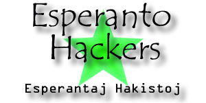

Hacked by biosdisk. HTML by
Mystik. Thanks
for the art, NetRebel!
Hi. I am Mystik of the Esperanto Hackers. Before I begin my discussion about the international auxilary language Esperanto, here is the file you were originally trying to access.
Esperanto.Net <-- Visit this for more excellent information available in many languages.
Many Americans don't realize it, but there do exist languages besides English. In fact, English is spoken by only 10% of the world's population. That's 90% of the world's people to whom an English-only speaker could not speak. That's 90% of the world that can not be communicated by an English-only speaker without relying on a translator.
Yet, many people do not consider this a problem. What do Americans think about the situation in general? Well, most seem to have the attitude that everyone else should learn English. Why would they have this attitude? Because of the United States' current military position. Americans seem to think that English is and always will be the closest thing to an international language.
Well, judging from the past, this view is wrong. Many languages have dominated the world for some time in history, and the speakers of those languages wouldn't have guessed that their languages would some day lose their status (or even die, like Latin). Examples are Spanish, German, English, French (only a few decades ago, French was thought of as the international language of business), and Latin.
And so is the case with English.
Would you believe that $100,000,000 are spent a year by the United Nations on translation of documents into the languages of all its countries? Just think of what better uses this money could be put to. If you don't consider this an international problem, then you have some mental problems.
One might ask, "why doesn't everyone simply learn English so we can all communicate?" My response to a person who asked this would be, "you are a moron." Here are just some of the reasons:
So what can we do about it, then? Well, the logical thing to do would be to create a language which matches these needs:
A language such as this solves the problems discussed earlier with English as an international language. I ask that while you re-read the list directly above, you be aware that this language exists, and it is Esperanto.
With around two-million speakers worldwide, Esperanto is the most successful attempt at an international auxilary language to date. People in Europe, Asia, Africa, South America, Australia, and (a relatively small amount compared to other regions) even North America, are gradually catching on to this.
Is it really easy-to-learn? I have to say from personal experience: YES! I studied it for about one month on my own from a free online course, and I was able to speak it as well as someone might speak Spanish after four years of taking it in a regulated high school class.
Is it the property of someone or some organization? No. It was made in the 1800s by a guy named Zamenhof (last name). He released pamphlets to the public, and originally tried to remain anonymous by signing as "Esperanto" which means "one who hopes" in English. People decided to name the language this. Eventually, he did get credit for his work, and he released all ownership of the language. Basically, he wanted it to evolve on its own, which it has done. Esperanto is a very living language.
However, to many people, the idea of inventing a language for the purpose of being used internationally (while not destroying or replacing anyone's culture) seems extremely silly. I'll admit, it even seemed silly to me at first. Let's break this down:
When most people encounter a problem, they create a solution. If you don't agree, let me give an example. Someone decided that it is a problem that we can not communicate with people without being face-to-face with them. They decided to tackle the problem and create the telephone. Today, the telephone is an indispensable tool. Another example: a group of people encounter a cliff while trying to reach their destination. This is a problem. Someone decides to create a solution: the bridge. The bridge is another indispenable tool today. Our problem: most people of any language can not communicate with the majority of the world without the aid of a translator. Well, unfortunately, most people decide that rather than create a solution, we should live with it. This would be the equivalent of never creating the telephone, but walking to someone's house when you needed to talk to them. This would be the equivalent of not creating the bridge, but walking around the perimeter of the cliff for hours or longer until a natural bridge was found. In these examples, not creating a solution seems silly. However, in the world language problem, most people are under the illusion that it is not silly to not create a solution. Well, I think we should create a solution, and I believe that solution is Esperanto.
If you agree with me, please take the time to learn and support Esperanto. Here are some excellent free online lessons, from which I learned the language. The Esperanto League for North America can be found here. And Esperanto.Net is an excellent resource. Also, try calling 1-800-ESPERANTO for more information from ELNA.
If you don't agree, I at least thank you for reading and learning about what Esperanto is. However, I think you will wish Esperanto did become an international auxilary language when you are being forced to learn a difficult language such as Arabic, Chinese, French, Japanese, or some other language. I'd rather learn Esperanto now than learn Chinese later and be forced to use it. It's your decision. Choose wisely.
To all defacers: if you don't have a message, don't deface. Or if you still want to deface, at least use my message or G-Force Pakistan's or some other message worthy of being on a defacement. You wonder why everyone thinks we are criminals, but I know why. It's because they see defacements that look as though they would have been written by a first grader or some psycho serial killer. Let's show everyone that we are educated and that we just want to get a message out, whatever the message might be.
Greets:
cxiuj Esperantistoj!
Dugnet, G-Force Pakistan, Root Shell
Hackers
Akurei, babboon, bi0cide, biosdisk, Big J,
binladen,
datagram, demise/ex1Le, dobe, doom, eshi, EvilBec, EvilCrusader, flip-boi,
#geekout, inforeading.com, jaynus, kallador, krazie, kreator, LyNxWoLf,
Hackronym, HeLL-X, inx, Lag, Leash, matic, mystik, MutualFear, nataS,
n3mo,
NetRebel, piffy, pshyaa, Psycho1, Rage, rakaen, rootx11, smashstack, sniper, solanine, SuPeR-KeR, Staman, Starman_Jones, Toadie, traze, trip, Uptown, vortex, wicked, wizerd, Scurvy